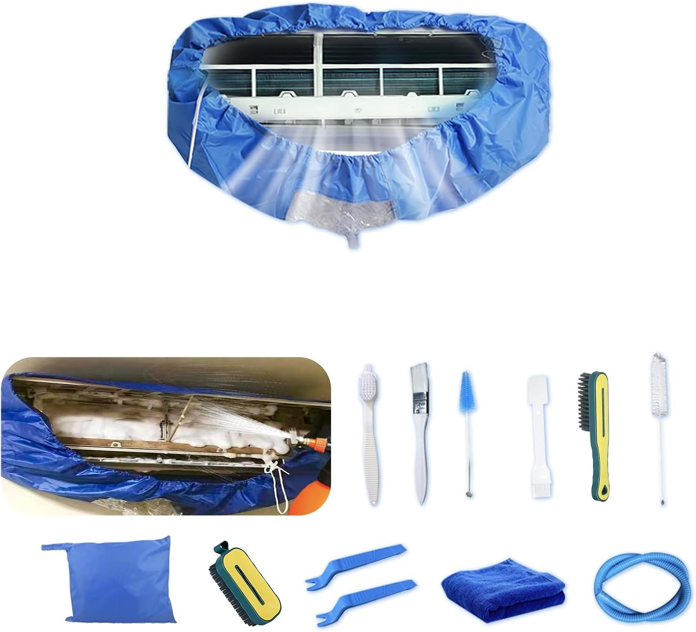

KIKEPILM
Kit de nettoyage en profondeur pour le nettoyage de climatiseur, sac de nettoyage de climatiseur avec tuyau d'eau (13 pièces, grand, bleu ciel)
32,01 €
Prix KIKEPILM, TVA incluse
| Marque | KIKEPILM |
| Modèle (ASIN) | B0F3FCGXQX |
| Couleur | Bleu Clair |
| Taille | grand |
| Prix | 32,01 € |
| Devise | EUR |
L'achat, la livraison et les retours se font via Amazon.
À propos de cet article
- 1. Kit de nettoyage complet pour mini-splits, pour un nettoyage en profondeur et étanche. Notre kit de nettoyage étanche tout-en-un est conçu pour les thermopompes mini-splits, les climatiseurs muraux et tous les systèmes CVC. Équipé de brosses inoxydables et d'un tuyau d'évacuation étanche de 2,7 mètres, ce kit pénètre en profondeur dans les serpentins et les conduits pour éliminer la saleté et les odeurs tenaces. Idéal pour un nettoyage maison ou professionnel, il n'endommagera pas votre climatiseur
- 2. Installation facile et conviviale : Installation rapide et sans compétences techniques requises ! Kit de nettoyage multifonction et complet pour climatiseur : 1 sac de nettoyage pour mini-split ; 2 brosses à manche long et court ; 1 brosse de nettoyage grossière multi-usages ; 1 tuyau d'évacuation de 2,7 mètres ; 2 plaques de levier ; 1 brosse multi-usages (poils souples) ; 1 brosse pour conduit (poils souples) ; 1 serviette ; 1 brosse pour conduit de filtre ; 1 brosse rotative pour le nettoyage de l'arrivée d'eau ; tuyau d'évacuation de 30,5 x 24,1 cm. Tout dans une mallette compacte et portable, idéale pour les particuliers et les techniciens CVC
- 3. Outils durables et étanches pour une utilisation longue durée. Fabriqué en plastique ABS de haute qualité et doté de joints étanches, ce kit résiste aux détergents et à une utilisation fréquente. Les poignées antidérapantes et le tissu antitache de la brosse garantissent sécurité et efficacité. Les outils sont résistants aux rayures pour protéger les pièces délicates de votre climatiseur : aucun risque de dommage lors du nettoyage ou du rinçage
- 4. Améliorez instantanément l'efficacité et la qualité de l'air de votre climatiseur. Nos brosses de nettoyage professionnelles rétablissent le flux d'air et prolongent la durée de vie de votre climatiseur. Elles sont parfaites pour les pompes à chaleur split, les unités murales et les systèmes de climatisation centralisée
- 5. Une solution polyvalente tout-en-un pour tous les besoins. Des brosses filtrantes aux embouts de tuyau d'évacuation, ce kit couvre tous vos besoins de nettoyage. Utilisez-le pour l'entretien mensuel ou les nettoyages en profondeur annuels ; aucun outil supplémentaire n'est requis ! Un incontournable pour les locataires, les propriétaires et les professionnels CVC à la recherche de résultats rapides et économiques